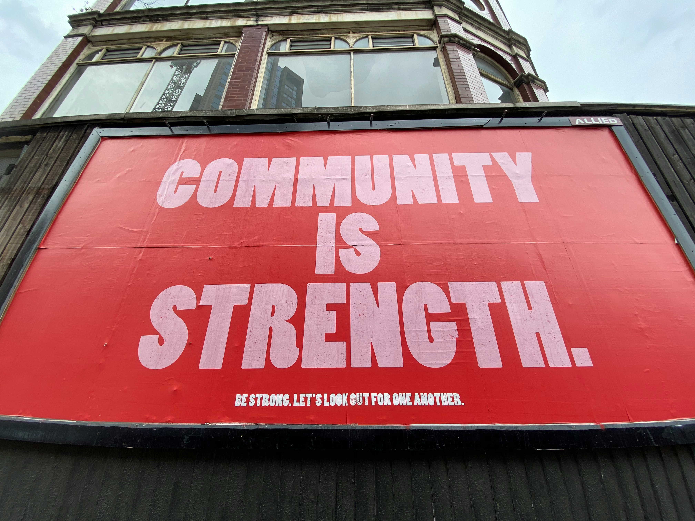

Dedicated to advocating for People Living with HIV, those at risk, and the marginalized communities most impacted by HIV.
Advocacy for Positive Change
At Positive Change Movement, we are committed to advocating for the rights of People Living with HIV (PLHIV). We strive to dismantle harmful policies, end stigma, and promote health equity for all.
Our Advocacy Goals
Decriminalization: We advocate for the decriminalization of HIV to ensure that individuals are not prosecuted for their status and that outdated laws are reformed to reflect scientific advancements.
Equitable Healthcare: We work toward a healthcare system that provides equitable access to treatment, prevention, and care for all individuals, regardless of income, race, or location.
Ending Stigma: We aim to break down the stigma surrounding HIV through education, public outreach, and promoting understanding within and beyond our community.
Advocacy in Action
Positive Change Movement engages in various advocacy initiatives, including:
Policy Reform: Working with local and national lawmakers to modernize HIV criminalization laws.
Community Outreach: Partnering with local organizations to raise awareness and provide resources for PLHIV.
Educational Campaigns: Offering workshops and materials to educate the public on HIV-related issues and to combat misinformation.

How You Can Get Involved
Our advocacy efforts rely on community support. Here’s how you can make a difference:
Contact Your Representatives: Reach out to your local representatives and urge them to support HIV decriminalization and equitable healthcare policies.
Attend Advocacy Events: Join us at local and national events where we raise awareness, share stories, and advocate for change.
Volunteer: Become an advocate by participating in outreach initiatives, helping to educate the public, or supporting those affected by HIV.
If you’re ready to take action, contact us to learn more about upcoming advocacy events and volunteer opportunities.